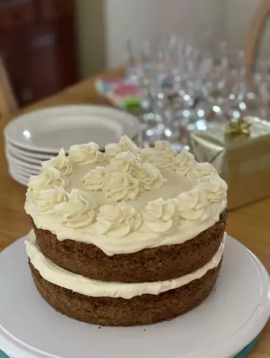

Carrot Cake Recipe

Ingredients
Cake
- 2 cups all-purpose flour
- 2 teaspoons baking soda
- 1/2 teaspoon fine sea salt
- 1 1/2 teaspoons ground cinnamon
- 1 1/4 cups canola or other vegetable oil
- 1 cup granulated sugar
- 1 cup lightly packed brown sugar
- 1 teaspoon vanilla extract
- 4 large eggs, room temperature
- 3 cups grated peeled carrots
- 1 cup coarsely chopped pecans
- 1/2 cup raisins
Frosting
- 8oz cream cheese, room temperature
- 1 1/4 cups powedered sugar
- 1/3 cup cold heavy whipping cream
- 1/2 cup coarsely chopped pecans, for topping the cake
Directions
- Position a rack in the middle of the oven. Grease two 9-inch round cake pans, line the bottom
with parchment paper and then grease the top. Or grease and flour the bottom and sides of both pans.
- Preheat oven to 350 degrees Fahrenheit(176C)/
- Whisk flour, baking soda, salt, and cinnamon in a medium bowl until well blended.
- In separate bowl, whisk oil, granulated sugar, brown sugar, and vanilla together.
- Add eggs one at a time, whisking in between each egg.
- Add in dry ingredients, whisking them in slowly.
- Divide cake batter into two equal parts between the cake pans.
- Bake for 35-45 minutes, or until the top is springy.
- Let cakes rest for roughly 15 minutes. Then, transfer them to a rack to cool on.
- In a large bowl, start your frosting by beating cream cheese with a handheld mixer until creamy, about one minute on medium speed.
- Beat in powdered sugar, 1/4 cup at a time, until fluffy.
- Pour in whipping cream. Beat on medium speed for 2 to 3 minutes, or until frosting is whipped and creamy.
This frosting resembles whipped cream in texture. Chill covered until ready to serve.
- When both cakes are completely cooled, frost the top of one cake. Then, layer the second cake on top and frost it as well.
Use a knife to swirl the frosting around the top of the cake, but leave the sides un-frosted.